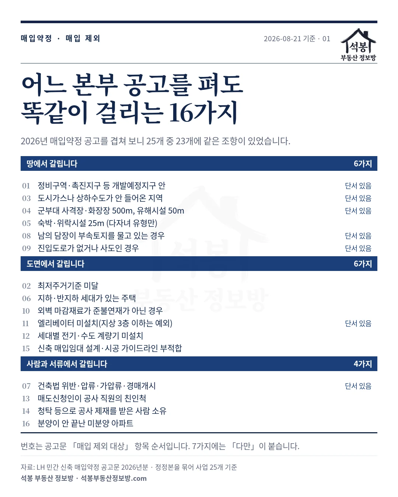
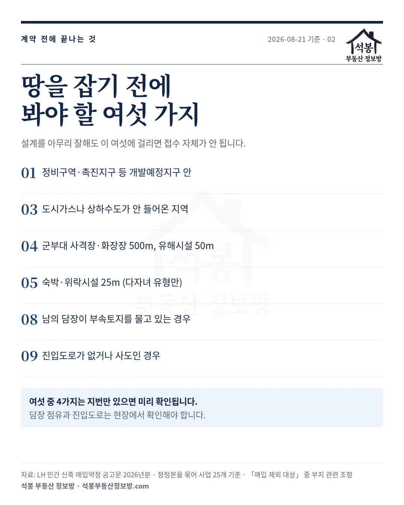
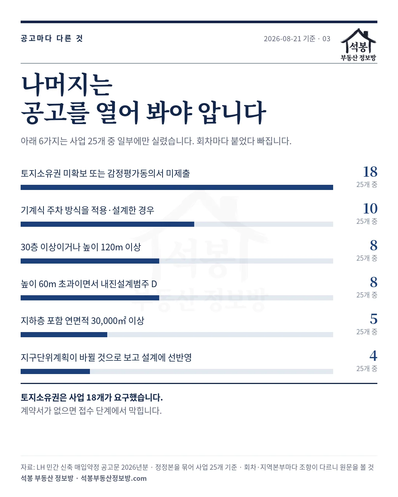
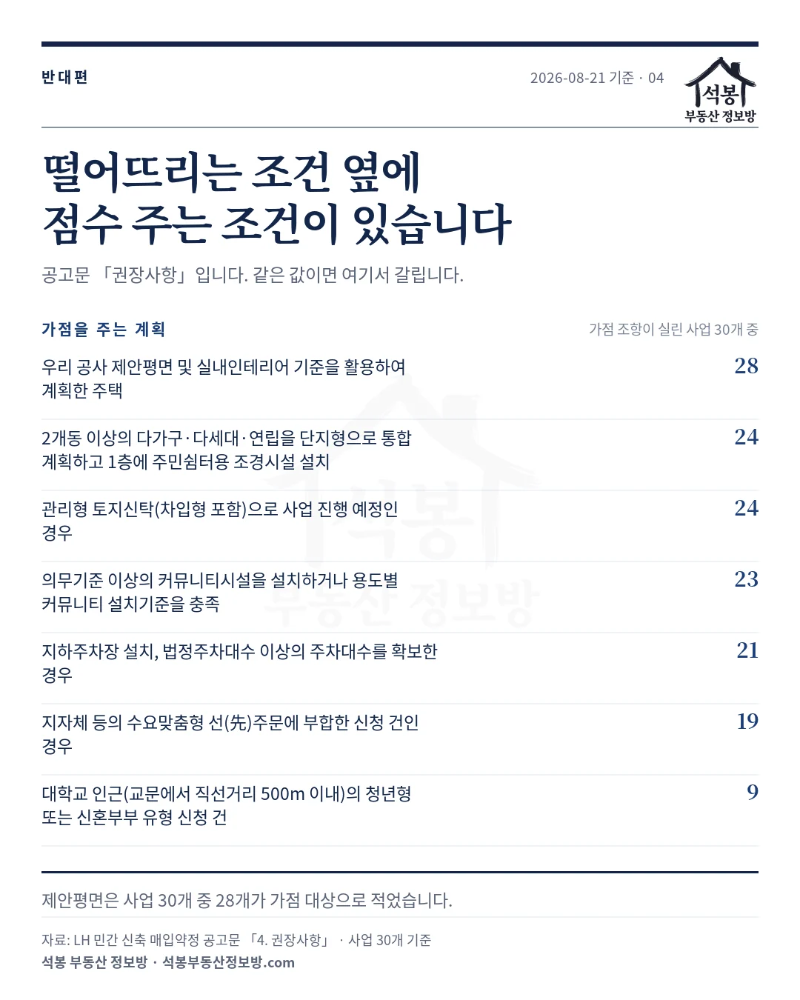

매입약정에서 떨어지는 이유는 대개 심사장에서 새로 생기지 않습니다. 공고문 「매입 제외 대상」에 이미 적혀 있습니다. 그런데 한 공고문에 그 항목이 열여덟 개쯤 이어지고, 지역본부마다 공고가 따로 나오다 보니 실무에서는 매번 다시 읽게 됩니다. 그래서 2026년에 올라온 민간 신축 매입약정 공고문 47건을 겹쳐 봤습니다. 정정본을 묶으면 사업 25개인데, 그중 23개에 똑같은 조항 16가지가 들어 있었습니다.
공고 47건을 겹쳐 보니 16가지가 겹쳤습니다
먼저 세는 방법을 밝혀 둡니다. 같은 사업이 정정공고로 여러 번 다시 올라오기 때문에 공고 건수를 그대로 세면 부풀려집니다. 제목에서 정정 표기를 떼어 사업 단위로 묶었고, 조항도 번호가 아니라 문구로 묶었습니다. 공고마다 항목 순서가 달라서 같은 6번이 다른 조항인 경우가 있습니다.
그렇게 정리하면 사업 25개 가운데 23개에 공통으로 실린 조항이 16가지입니다. 성격이 갈리기에 세 갈래로 나눠 봤습니다.
| 갈리는 지점 | 가짓수 | 무엇 |
|---|---|---|
| 땅 | 6가지 | 계약하기 전에 확인해야 하는 것 |
| 도면 | 6가지 | 설계 단계에서 갈리는 것 |
| 사람과 서류 | 4가지 | 권리 관계와 신청 자격 |

가입하시면 지역 시장조사 보고서(약식)를 2회 무료로 요청하실 수 있습니다.
하나. 땅에서 갈리는 여섯 가지
설계를 아무리 잘해도 이 여섯에 걸리면 접수가 안 됩니다. 땅값을 치르기 전에 봐야 하는 항목이라는 뜻입니다.
| 번호 | 제외 사유 |
|---|---|
| 01 | 정비구역·재정비촉진지구·공공주택지구·택지개발예정지구 등 개발이 예정된 지구 안 |
| 03 | 도시가스나 상하수도가 안 들어온 지역 |
| 04 | 군부대 사격장·화장장에서 500m 이내, 또는 유해시설에서 50m 이내 |
| 05 | 일반숙박시설·위락시설에서 25m 이내. 다자녀 유형에만 걸립니다 |
| 08 | 남의 담장 같은 시설물이 부속토지를 물고 있는 경우 |
| 09 | 진입도로가 없거나 사도인 경우 |
첫 번째가 실무에서 가장 자주 걸립니다. 개발이 예정된 지구 안이면 매입 대상이 아닙니다. 다만 단서가 붙습니다. 그 지구의 개발계획에 따라 새로 짓는 주택은 선정될 수 있고, 지구 지정을 푸는 절차가 진행 중이거나 존치관리구역으로 지정된 경우에도 지자체 의견을 들어 선정할 수 있다고 적혀 있습니다. 그러니 구역 경계와 현재 단계를 먼저 확인해야 합니다. 저희 지도에서 성수 일대 정비구역처럼 구역 범위를 눌러 보시면 어디까지가 안이고 밖인지 잡힙니다.
거리 조항은 숫자가 셋으로 갈립니다. 군부대 사격장과 화장장은 500m, 주택건설기준에 걸리는 유해시설은 50m, 일반숙박시설과 위락시설은 25m입니다. 모두 가장 가까운 대지경계선을 기준으로 재고, 건물 가운데가 아닙니다. 숙박·위락시설 조항은 다자녀 유형에만 걸리니 다른 유형으로 신청한다면 해당하지 않습니다. 주거용 오피스텔은 유해시설 기준을 아예 적용하지 않는다는 단서도 붙어 있습니다.
여섯 가지 가운데 넷은 지번만 있으면 미리 걸러집니다. 담장 점유와 진입도로는 현장과 지적도를 봐야 압니다.

둘. 도면에서 갈리는 여섯 가지
| 번호 | 제외 사유 |
|---|---|
| 02 | 국토교통부 「최저주거기준」에 미달 |
| 06 | 지하나 반지하 세대가 있는 주택 |
| 10 | 외벽 마감재료가 준불연재가 아닌 경우(필로티 천장·벽체 포함) |
| 11 | 엘리베이터 미설치. 다만 지상 3층(필로티 포함) 이하는 매입 가능 |
| 12 | 세대별 전기·수도 계량기 미설치 |
| 15 | 「신축 매입임대주택 설계·시공 가이드라인」에 부적합 |
여기서 놓치기 쉬운 것이 엘리베이터 예외 조항입니다. 지상 3층 이하면 없어도 되는데 필로티를 층수에 넣습니다. 필로티 위로 3개 층을 올리면 지상 4층이 되어 예외에서 빠집니다. 그리고 조항에 고령자형은 엘리베이터 설치 필수라고 못 박혀 있습니다. 층수와 무관합니다.
외벽 마감재료 조항도 범위가 넓습니다. 벽면만 생각하기 쉬운데 필로티 구조에서 바깥 공기에 닿는 천장과 벽체까지 포함한다고 적혀 있습니다. 반지하는 예외 없이 제외입니다. 주차 여유를 만들려고 지하에 한 세대를 두면 그 건물 전체가 걸립니다.
셋. 사람과 서류에서 갈리는 네 가지
| 번호 | 제외 사유 |
|---|---|
| 07 | 건축법 위반, 압류, 가압류, 경매개시 등 법률상 제한사유 |
| 13 | 매도신청인이나 그 배우자·직계존비속이 공사 전·현직 직원인 경우. 전 직원은 퇴직 5년 이내를 말합니다 |
| 14 | 청탁 등 부정한 행위로 공사 제재를 받은 사람 소유. 제재 확정일부터 10년 |
| 16 | 입주자 모집공고를 냈으나 분양이 끝나지 않은 미분양 아파트 |
이 넷은 도면으로 못 고칩니다. 다만 07번에는 문이 하나 열려 있습니다. 토지에 걸린 제한이라면 토지확보 시기까지 풀 수 있는 경우 조건부로 신청할 수 있습니다. 가압류가 잡힌 땅이라고 곧바로 포기할 일은 아니라는 뜻입니다. 반대로 건물에 걸린 건축법 위반은 그런 단서가 없습니다.
넷. 16가지 중 일곱에는 빠져나갈 문이 있습니다
여기가 이 글에서 가장 실무에 가까운 대목입니다. 제외 조항을 목록으로만 읽으면 전부 사형선고처럼 보이는데, 실제로는 일곱 개에 「다만」이 붙어 있습니다.
| 번호 | 단서 |
|---|---|
| 01 | 그 지구의 개발계획에 따라 새로 짓는 주택은 선정 가능. 해제 절차 중이거나 존치관리구역이면 지자체 의견을 들어 선정 가능 |
| 03 | 농어촌 등 여건상 미설치 지역이거나, 매도자가 설치해 주거에 문제없게 조치하면 매입 가능 |
| 04 | 주유소·석유판매취급소·천연가스충전소는 그 부지를 함께 매도신청하거나 25m를 넘으면 선정 가능. 주거용 오피스텔은 유해시설 기준 미적용 |
| 07 | 토지에 한해, 토지확보 시기까지 제한사유를 치유할 수 있으면 조건부 신청 가능 |
| 08 | 점유를 풀 수 있다는 객관적 증빙자료를 내면 매입 가능 |
| 09 | 사도라도 무상귀속이나 기부채납 계획을 조건으로 하거나, 사도법 제4조 허가를 받고 사용료가 없으면 조건부 매도신청 가능 |
| 11 | 지상 3층(필로티 포함) 이하는 엘리베이터 없이 매입 가능. 단 고령자형은 필수 |
실무에서 갈리는 지점이 여기입니다. 담장이 물려 있어도 풀 수 있다는 증빙이 있으면 되고, 진입도로가 사도여도 기부채납 계획을 붙이면 됩니다. 조항만 보고 접었던 땅이 단서를 읽으면 살아나는 경우가 있습니다. 반대로 단서가 없는 조항은 정말 끝입니다. 반지하, 최저주거기준 미달, 준불연재가 아닌 외벽, 계량기 미설치가 그렇습니다.
다섯. 공고마다 붙었다 빠지는 여섯 가지
위 16가지가 사실상 표준이라면, 아래 여섯은 회차와 지역본부에 따라 갈립니다. 사업 25개 중 몇 개에 실렸는지 세어 봤습니다.
| 추가 제외 사유 | 실린 사업 |
|---|---|
| 토지소유권 미확보 또는 토지소유자 감정평가동의서 미제출 | 18개 |
| 기계식 주차 방식을 적용해 설계한 경우 | 10개 |
| 30층 이상이거나 높이 120m 이상인 고층건축물 | 8개 |
| 높이 60m 초과이면서 내진설계범주 D에 해당 | 8개 |
| 지하층 포함 연면적 30,000㎡(9,075평) 이상 | 5개 |
| 지구단위계획이 바뀔 것으로 보고 설계에 선반영 | 4개 |
첫 줄이 중요합니다. 사업 25개 중 18개가 접수 시점에 토지소유권이나 소유자 감정평가동의서를 요구했습니다. 땅을 아직 못 잡은 상태로 도면부터 준비하면 그 회차는 접수 단계에서 막힙니다.
두 번째 줄도 눈여겨보실 만합니다. 기계식 주차를 제외 사유로 적은 사업이 10개로, 고층건축물 조항보다 흔합니다. 카리프트만 예외로 두는 공고가 있고 아예 언급이 없는 공고도 있어 회차마다 다릅니다. 주차대수를 기계식으로 맞추려던 계획이라면 그 공고문부터 확인하셔야 합니다. 마지막 줄은 지구단위계획이 곧 바뀔 것 같아 그 내용을 미리 반영해 그린 도면은 받지 않는다는 뜻입니다.

여섯. 반대편에는 점수를 주는 일곱 가지가 있습니다
공고문 「권장사항」입니다. 제외 조항을 다 피했다면 다음은 여기서 갈립니다. 가점 조항이 실린 사업 30개를 기준으로 셌습니다.
| 가점을 주는 계획 | 실린 사업 |
|---|---|
| LH 제안평면과 실내인테리어 기준을 활용해 계획 | 28개 |
| 2개동 이상의 다가구·다세대·연립을 단지형으로 통합하고 1층에 주민쉼터용 조경시설 설치 | 24개 |
| 관리형 토지신탁(차입형 포함)으로 사업 진행 예정 | 24개 |
| 의무기준 이상의 커뮤니티시설 설치 | 23개 |
| 지하주차장 설치, 법정주차대수 이상 확보 | 21개 |
| 지자체 등의 수요맞춤형 선(先)주문에 부합 | 19개 |
| 대학교 인근(교문에서 직선거리 500m 이내)의 청년형·신혼부부형 신청 건 | 9개 |
제안평면이 가장 넓게 걸려 있습니다. 사업 30개 중 28개가 가점 대상으로 적었습니다. 건축물 용도와 대지 상황에 맞춰 변형해 쓰라고 되어 있으니 그대로 베낄 필요는 없습니다. 주차는 방향이 분명합니다. 지하주차장과 법정 이상 주차대수는 가점이고, 기계식은 제외 사유입니다. 같은 주차대수를 어떻게 맞추느냐가 결과를 가릅니다.

LH는 실제로 어디에 얼마나 사들였나
조건 이야기만 하면 감이 안 잡히니 실적을 함께 봅니다. LH 매입임대 공급현황에서 청년·신혼 유형으로 공급된 물량은 65,653호입니다. 주택종류는 오피스텔 27.0%, 다가구 18.9%, 다세대 15.7% 순입니다. 대단지가 아니라 동네 안 소규모 건물이 주력이라는 뜻입니다.
가장 많이 사들인 곳은 경기 수원시 4,323호이고, 인천 남동구 2,161호, 경기 안산시 2,145호가 뒤를 잇습니다. 서울에서 가장 많은 곳은 중랑구 1,487호로 전국 8위입니다. 수도권 바깥에서는 충북 청주시가 1,542호로 가장 많습니다. 매입 가격 기준선을 잡으려면 그 동네 거래를 직접 보시는 편이 빠릅니다. 수원 권선동, 인천 구월동, 서울 면목동의 실거래를 열어 보시면 같은 동 안에서도 폭이 꽤 넓다는 것이 보입니다.
조항은 공고문 PDF에서 뽑았고, 문구가 조금씩 다른 판본을 하나로 묶어 세었습니다. 가점 조항은 제외 조항과 분모가 다릅니다(제외는 사업 25개, 가점은 30개). 같은 조항이라도 회차와 지역본부에 따라 단서가 붙거나 빠지니, 실제 신청은 반드시 해당 공고문 원문을 확인하고 하십시오.
지금 열려 있는 공고와 남은 순서
2026년 8월 21일 기준으로 약정 방식으로 접수 중인 공고는 7건입니다. 수도권 세 곳이 2026년 9월 3일, 9월 9일, 9월 11일에 차례로 닫힙니다. 위 16가지 가운데 땅에 걸리는 여섯은 지금 확인해도 늦지 않지만, 토지소유권을 요구하는 회차라면 계약서부터 챙기셔야 합니다.
저희는 2018년부터 올라온 LH 주택매입공고를 모아 두고 매일 새 공고를 받아 마감일로 상태를 다시 판정합니다. 열려 있는 공고는 주택매입공고 아카이브에서 연도·유형·지역본부로 걸러 보실 수 있고, 사업지 주소로 여덟 항목을 먼저 확인하는 매입약정 셀프진단도 함께 열어 두었습니다. 진단은 참고용이고 LH 심사를 대신하지 않습니다.
원자료: LH 민간 신축 매입약정 공고문 2026년분 47건에서 추출한 「매입 제외 대상」·「권장사항」 조항 · 기준일 2026년 8월 21일
정정본은 제목에서 정정 표기를 떼어 하나로 묶었고(제외 조항 사업 25개, 가점 조항 사업 30개), 조항은 번호가 아니라 문구로 묶었습니다
매입 실적 65,653호는 LH 매입임대 공급현황(2025년 11월 20일 기준) 중 청년·신혼 유형 공급분이며, 신축 매입약정분만 따로 가른 값은 아닙니다
접수 중 7건은 LH 상태 표시가 아니라 마감일과 기준일을 비교해 다시 판정한 값입니다 · 편집·제작: 석봉 부동산 정보방 · 투자 권유가 아닙니다.